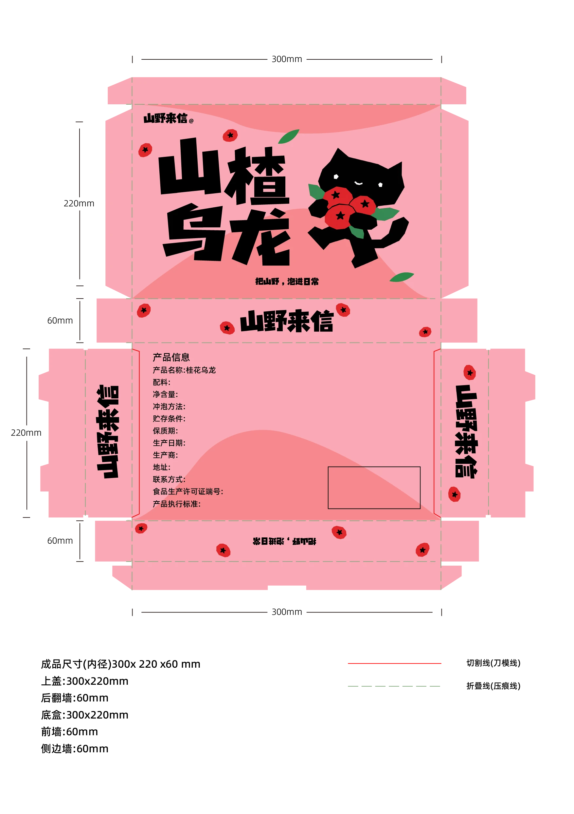
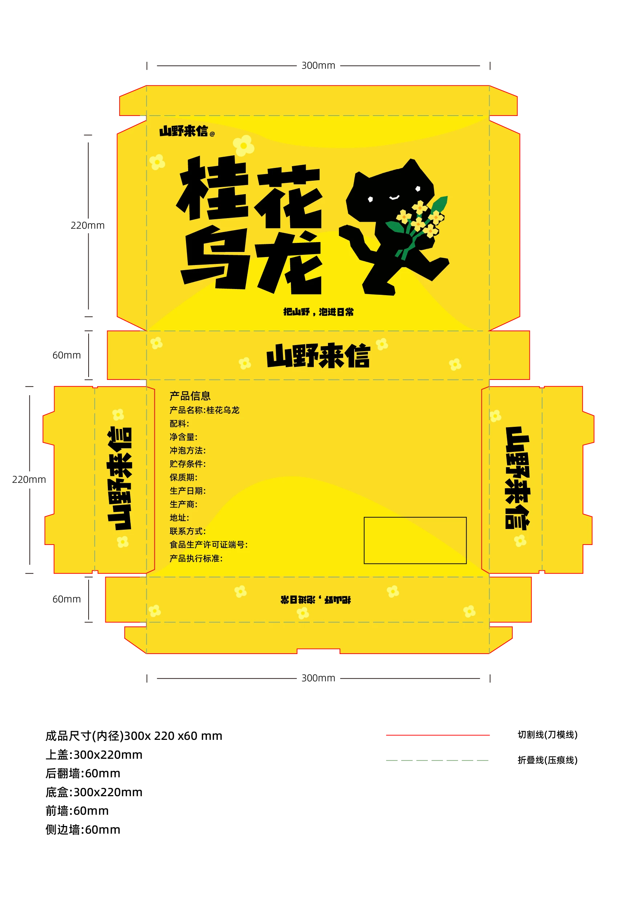
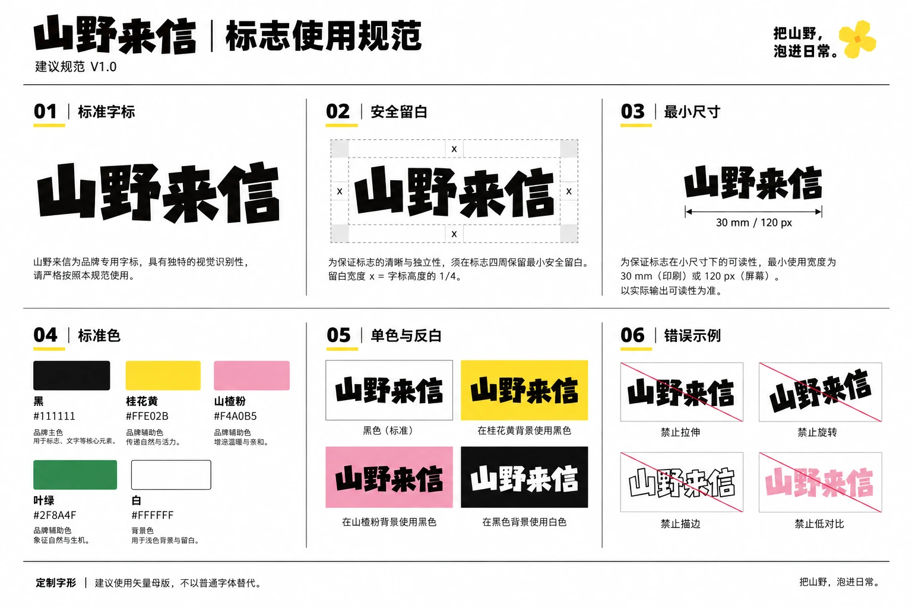
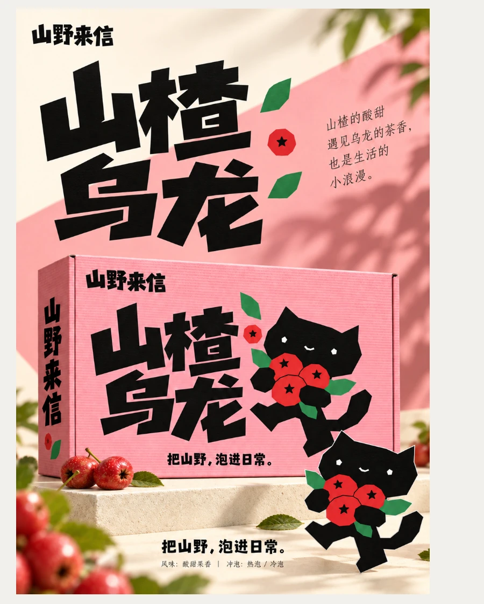
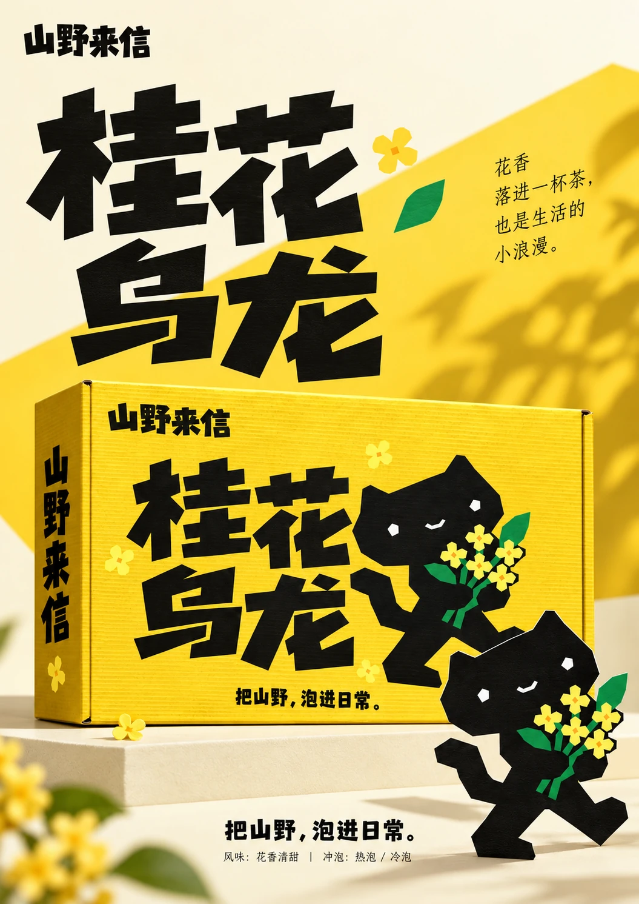
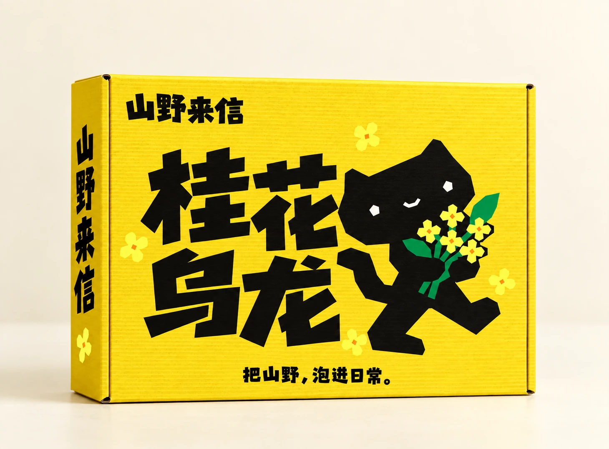
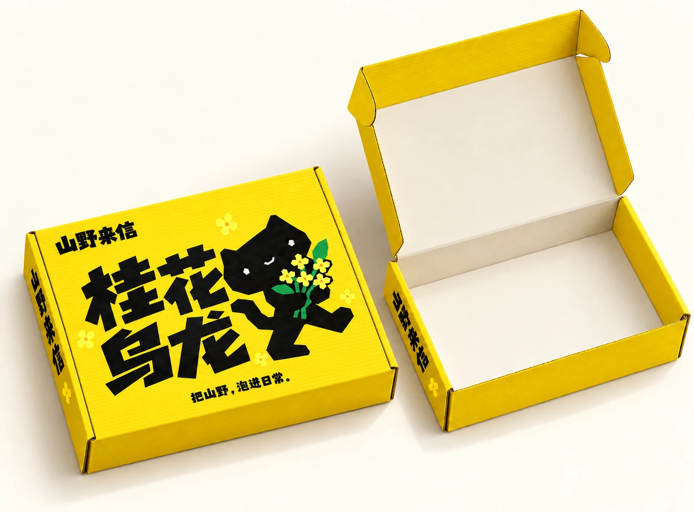
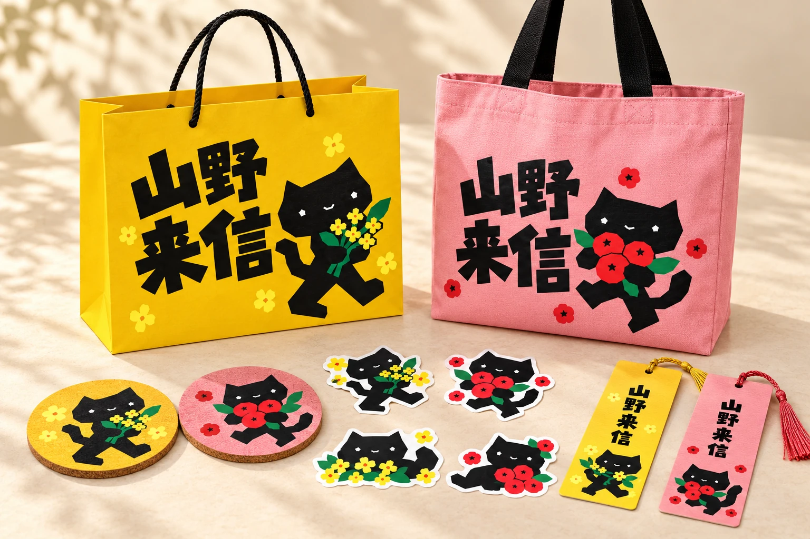

PROJECT DETAIL / PACKAGING 01
山野
来信
SHAN YE · PACKAGING DESIGN
主题 / THEME
桂花乌龙与山楂乌龙系列礼盒包装
项目说明 / DESCRIPTION
以“把山野，泡进日常”为主题，用斜切粗黑字形、棱角小猫和花果图形构建识别，通过明黄色与粉色区分两款产品。
桂花乌龙与山楂乌龙系列礼盒包装
以“把山野，泡进日常”为主题，用斜切粗黑字形、棱角小猫和花果图形构建识别，通过明黄色与粉色区分两款产品。
围绕花果乌龙茶的日常饮用场景，将桂花与山楂转化为可识别的图形，结合小猫角色，让包装在品牌识别与趣味表达之间建立联系。
先统一品牌字形和小猫形象，再根据两种花果主题确定配色及图案。将正面视觉延展到侧面、底部信息区和礼盒展开示意，并通过正面、开盒与系列组合样机检查应用效果。


斜切字形与几何化角色形成统一的棱角语言。小猫分别手捧桂花与山楂，传达产品主题；黄色桂花款与粉色山楂款形成清晰的系列区分。产品名称作为正面视觉重点，品牌名与标语辅助识别，底面集中组织产品信息。

展开图中的正面、侧面与底面需要兼顾连续视觉和信息可读性。当前方案通过统一品牌字形、保留侧面识别与独立底部信息区组织版面。具体生产问题及打样记录尚未提供，不作为已完成成果陈述。
展开图为概念结构示意，非生产刀模。建议成品内径为 300 × 220 × 60 mm；尺寸、锁口、出血和产品信息须由印厂校核并打样确认。




延续黄粉配色、棱角小猫与花果图形，应用于纸质手提袋、帆布袋、杯垫、贴纸和书签。
